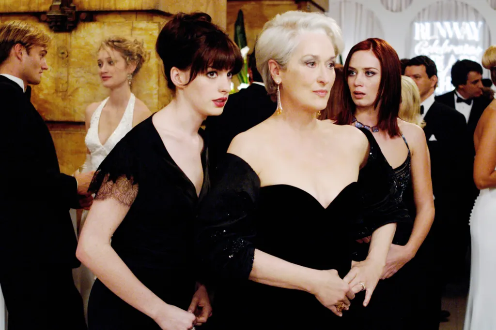
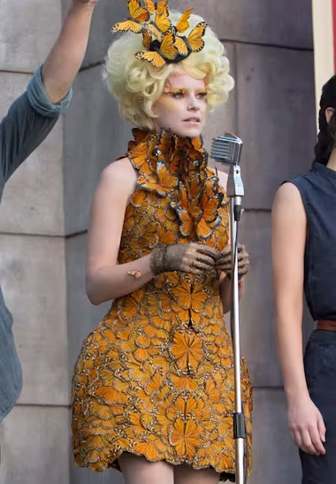
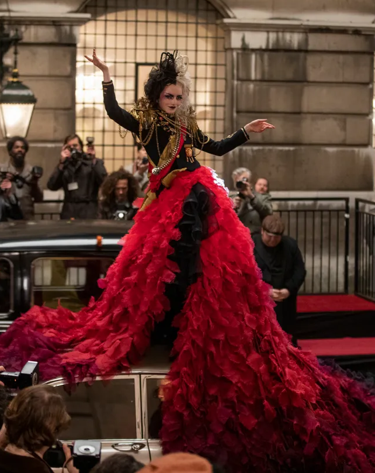

Before a character says a word, their clothes have already started telling their story.
Styled on Screen explores memorable fashion from movies and television and the role clothing plays beyond simply dressing a character. From a perfectly coordinated plaid set to a dramatic ball gown, costumes can reveal personality, reflect character development, establish an era, and even influence fashion beyond the screen.
Explore iconic looks to discover their style or aesthetic, costume designer, meaning within the story, and lasting influence on fashion and pop culture.

20th Century Fox Film Corp./Everett Collection
Featured Looks
Lionsgate

Effie Trinket – The Hunger Games: Catching Fire
Style/Aesthetic: Avant-Garde / Theatrical
Costume Designer: Trish Summerville
Designer: Alexander McQueen
Year: 2013
Covered in monarch butterflies, Effie Trinket’s Alexander McQueen dress captures the extravagant, avant-garde fashion of the Capitol while reinforcing its culture of excess and spectacle. The look brought McQueen’s runway design to a massive pop-culture audience and became one of Effie’s most recognizable fashion moments.
The March sisters’ costumes balance period-accurate silhouettes with individual details that distinguish each sister’s personality and ambitions. Costume designer Jacqueline Durran used color, texture, and shared clothing to make their wardrobes feel lived-in and connected, helping the film’s fashion become a memorable part of its modern interpretation of the classic story.
Disney

Cruella de Vil — Cruella
Style/Aesthetic: Punk / Avant-Garde
Costume Designer: Jenny Beavan
Director: Craig Gillespie
Year: 2021
Cruella’s dramatic red gown combines punk rebellion with theatrical high fashion, using exaggerated volume and military-inspired details to turn her entrance into a spectacle. The look reflects her growing confidence and desire to challenge the fashion establishment, becoming one of the film’s defining images and reinforcing Cruella’s celebration of fashion as rebellion and self-expression.
Explore the Archive
Choose a section to browse more iconic fashion moments.